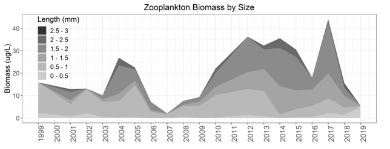
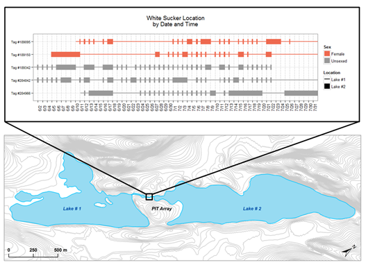

Current Projects
Validation of close-kin mark-recapture
Close-kin mark-recapture or CKMR is a cutting-edge technique for abundance estimation that makes use of genetic-based kinship assignment. The technique is particularly advantageous in situations where sampling is sparse, employs a variety of effort levels and methods, and/or involves lethal capture. An additional benefit of CKMR is the ability to estimate absolute abundance during past years (and potentially past decades in long-lived species).
The basic premise of CKMR is that the occurrence of kin-pairs in a sample is directly related to the number of individuals in a population and, in particular, the number of mature individuals present during a specific year. In a small population, a randomly chosen juvenile and adult are fairly likely to be a parent-offspring pair. However, in a very large population this likelihood is greatly reduced. By comparing all possible combinations within a sample and using genotyping to determine how many are true parent-offspring pairs one can calculate the most likely size for the true population.
This technique is quite new and has therefore not been widely applied. At present, CKMR has mainly been used to assess a few high-value and/or difficult to sample marine stocks (e.g. southern bluefin tuna and white sharks ). My work seeks to further validate the technique in freshwater systems by employing CKMR to assess salmonid recovery. More information on the specific project and our findings is available in the published article as well as my presentation at the 2020 NYAFS annual meeting.
Community response to colonization and invasion
Predation can strongly influence zooplankton community composition, both directly and indirectly. While predation by vertebrates such as planktivorous fish has often been considered to be the main driver of zooplankton community size structure in lakes inhabited by fish, studies have shown that predation by larger invertebrates such as larvae of the dipteran midge Chaoborus can also exert strong influences on zooplankton. Case studies also suggest that shifts towards invertebrate predation can increase diversity and average size in zooplankton communities. However, predator communities are themselves subject to change due to a variety of factors. While many invertebrate predators, such as Chaoborus, are not limited by transport due their aerially-dispersing adult stages, their distribution may be determined by environmental factors such as susceptibility to UV exposure in clear lakes. Non-native fish predators and the invasive predatory cladoceran Bythotrephes disperse more slowly, but rising human access to remote waters have accelerated these potential impacts on lake zooplankton communities.
We studied the effects of these interacting forces on zooplankton community dynamics and overall food web structure using existing long-term data on water chemistry, fish abundance, fish isotopic composition, and zooplankton biomass in an Adirondack lake formerly influenced by acidification and recently invaded by rainbow smelt (Osmerus mordax). We augmented this data set by extending analyses to the present day, re-analyzing zooplankton samples for Chaoborus, and examining the contemporary isotopic food web to enhance our understanding of previously collected brook trout isotopic data. The goal of our analyses was to answer three interlinked questions: 1) has the lake’s biotic community continued to recover from acidification, 2) what effect has the colonization of vertebrate and invertebrate zooplankton predators had on zooplankton community composition and 3) how has the recovering brook trout population been influenced by these changes.

Diel interlake movement by white sucker
I am currently in the process of investigating diel interlake movement by white sucker (Catostomus commersoni). Preliminary data indicates that a substantial proportion of the sucker population in an interconnected northern lake system moves between waters a nightly basis during June and July, leaving one lake at sunset and returning shortly before dawn the next morning. Fish repeated this pattern day after day, with one individual making 29 similar trips in a 60-day period. While not a game species, white suckers are widespread in New York and can comprise a significant portion of the fish biomass in many waters. The potential for inter-lake movement therefore might have a substantial influence on food web linkages in networks of connected lakes and streams. This project has been featured by the New York Chapter of the American Fisheries Society and the results are currently in review.
